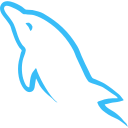
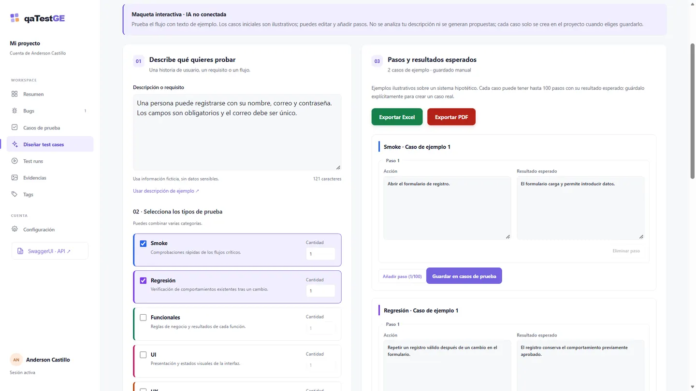
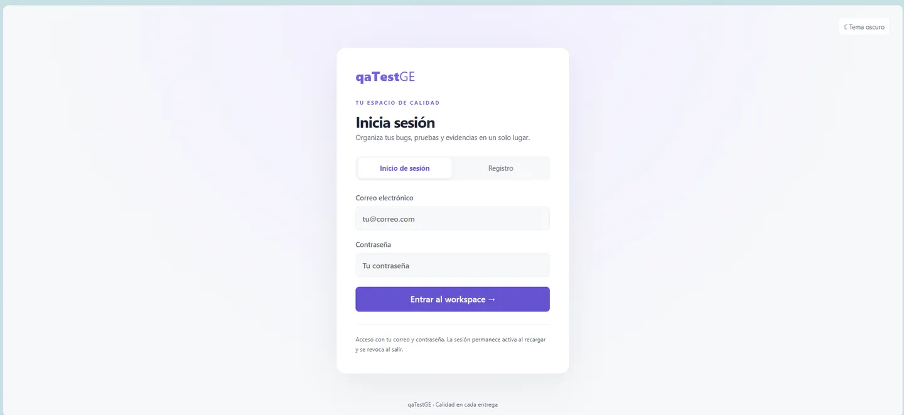
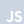
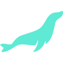

50%
Reducción del Tiempo de Regresión
Regresión reducida de 10 a 5 días mediante la automatización de módulos.
QA Automation Engineer con más de 4 años de experiencia asegurando la calidad del software mediante pruebas manuales y automatizadas. Especializado en Playwright, TypeScript, pruebas API y validación de datos mediante SQL.
Busco oportunidades remotas en QA Manual y Automatización de Pruebas.
Regresión de 10 a 5 días · 50% menos tiempo, misma cobertura

MySQLReducción del Tiempo de Regresión
Regresión reducida de 10 a 5 días mediante la automatización de módulos.
Pruebas automatizadas
Escritas en código y mantenidas en Visual Studio Code.
Casos manuales documentados
Registrados en Azure DevOps para la ejecución de pruebas manuales.
Años de Experiencia
En aseguramiento de calidad de software, desde mayo de 2022.
XpertCode
Ayudo al equipo a entregar software confiable conectando requisitos, diseño de pruebas y validación técnica. Combino pruebas exploratorias y manuales con automatización mantenible, investigo fallos en la interfaz, las API y los datos, y comunico los hallazgos para que el equipo pueda priorizar correcciones y tomar decisiones informadas sobre las entregas.
CASO DE ESTUDIO PROFESIONAL
La automatización por módulos ayudó a un equipo de dos QA a completar la regresión de más de 120 páginas, mientras continuaba validando el trabajo del sprint.
Validar más de 120 páginas manualmente requería 10 días y competía con las pruebas del sprint.
Diseñé e implementé la mayor parte del framework Playwright + TypeScript y organicé la ejecución por módulos.
Ciclo completo de 5 días con la misma cobertura, combinando automatización, pruebas manuales y análisis de fallos.
Una aplicación de gestión de equipos móviles permitía trabajar con precios regulares y de oferta, bundles y bonos para distintos proveedores y sucursales. La regresión exigía comprobaciones manuales en más de 120 páginas, incluyendo DevTools, solicitudes y respuestas de API y validación en base de datos.
La regresión de diez días se ejecutaba en paralelo al sprint, afectaba la planificación de los pases a producción y dejaba menos tiempo para tareas QA, preparación de casos y documentos de certificación de historias de usuario.
En un equipo de dos profesionales QA, asumí la mayor parte del diseño e implementación del framework con Playwright y TypeScript, incluyendo clases, interfaces, objetos de página y datos de prueba.
El ciclo completo de regresión disminuyó de diez a cinco días manteniendo la cobertura de todas las ventanas de la aplicación. La mejora se observó en regresiones sucesivas. Algunos módulos que antes requerían horas podían ejecutarse en minutos.
El ciclo de cinco días combinaba ejecución automatizada, validación manual y revisión de fallos. El comportamiento crítico del core y las funcionalidades nuevas del sprint que todavía no estaban automatizadas continuaban validándose manualmente.
Aprendí a estructurar un proyecto de automatización mantenible y reforzaría antes mis fundamentos de Node.js al comenzar una implementación similar.
Relato anónimo basado en mi experiencia profesional. El resultado corresponde al ciclo completo de regresión, no a una reducción del 50% en cada prueba individual.
PROYECTOS DESTACADOS
Explora mis proyectos personales y académicos, su alcance, aprendizajes y el código disponible.
Proyecto personal
Plataforma web para gestionar bugs, casos de prueba, ejecuciones manuales y evidencias en proyectos QA.
Proyecto académico
Proyecto final de Java para la gestión de remesas, con pantallas de escritorio documentadas en el repositorio.
Proyecto académico en equipo
Aplicación full-stack para la gestión de una Administradora de Riesgos de Salud (ARS), desarrollada en Ingeniería de Software II en la UASD.
Proyecto personal
Finanzas personales para Android y web: una vista clara de ingresos, gastos y movimientos pendientes de revisión.
En desarrollo activo · Las conexiones Gmail/Outlook y la autenticación real de cuentas forman parte del roadmap.
Proyecto académico
Tienda online académica desarrollada para la asignatura Teoría de Programación III, combinando desarrollo web y práctica de administración de servidores.
Proyecto académico · Repositorio privado
Este proyecto me permitió conectar la interfaz de una tienda con su backend y su entorno de ejecución. Practiqué con servicios en Ubuntu sobre WSL, acceso remoto por SSH y configuración de un proxy con NGINX. Según el servidor utilizado en las prácticas, desplegaba la tienda online o una API de Python con Flask.
CASO DE ESTUDIO · PROYECTO PERSONAL
Un espacio de trabajo QA que nace de un flujo fragmentado entre Gems de Gemini y proyectos de ChatGPT. Dirijo el producto y su implementación con asistencia de IA; el desarrollo continúa.
Dirección humana · Asistencia de IA · Validación QA
Casos, bugs y ejecuciones estaban dispersos; los casos necesitaban múltiples pasos.
Defino requisitos, dirijo el desarrollo asistido por IA y valido flujos reales de trabajo QA.
Gestión de casos con múltiples pasos, bugs, evidencias y exportaciones. Proyecto en desarrollo; generación con IA pendiente.
Utilizaba asistentes separados para preparar casos límite, UAT, sanity y otras categorías de prueba. Mi objetivo es reunir diseño de casos, bugs, tags, ejecuciones manuales y exportaciones en un espacio para profesionales QA. La generación asistida por IA y el feedback más rápido son objetivos del producto, no capacidades ya entregadas.
Defino funcionalidades, arquitectura, bugs por resolver y contexto de trabajo. La IA ayuda a convertir esas decisiones en código. Utilizo OpenCode y Codex, skills reutilizables y prompts con Rol, Contexto, Requisitos y Salida; mantengo la responsabilidad de evaluar la implementación.
Organizo la asistencia en roles de arquitectura/orquestación, búsqueda de bugs, backend, frontend, revisión de código, testing, UI y UX. Son responsabilidades de desarrollo asignadas a asistentes de IA, no agentes autónomos integrados en el producto.
AGENTS.md recoge reglas del proyecto y MEMORY.md conserva contexto de trabajo. Uso una conexión MCP con Obsidian y estoy iniciando un flujo de RAG/segundo cerebro mientras migro mis apuntes. Forma parte de mi proceso de desarrollo, no de una función de búsqueda o RAG ofrecida por qaTestGE.
El primer diseñador trataba cada caso como un único paso. Durante un recorrido local de extremo a extremo detecté que eso no representaba un procedimiento de prueba QA. Aclaré el requisito mediante un prompt más preciso y corregí el diseño para admitir una secuencia de acciones y resultados esperados.
El repositorio actual modela los pasos como una lista con acción y resultado esperado y documenta hasta 100 pasos por caso guardado. La captura muestra ejemplos editables y guardado explícito; no demuestra generación mediante IA.
La implementación actual utiliza React, TypeScript y Vite, con API Express y PostgreSQL mediante pg, siguiendo una separación de estilo MVC. Utilizo ESLint y Prettier para consistencia y pruebas unitarias antes de aceptar cambios. El repositorio también contiene pruebas de API con Vitest/Supertest y validaciones CI.
Para validar manualmente simulo el trabajo diario de QA: crear un bug y comprobar que el flujo sea comprensible, accesible desde el workspace y coherente con el caso de uso. El linting y el formato favorecen la mantenibilidad; por sí solos no garantizan seguridad.
Gestión de bugs, casos con múltiples pasos, evidencias y tags; ejecuciones manuales; registro/login y configuración de cuenta. Los bugs y casos individuales se exportan a PDF, Excel y Markdown, mientras el diseñador exporta sus ejemplos editables a Excel/PDF. ExcelJS, jsPDF y SwaggerUI apoyan las exportaciones y la documentación de API.
La conexión a proveedores de IA mediante API keys no está implementada. El diseñador no analiza la descripción ni genera propuestas con IA, y las ejecuciones son registros manuales, no un motor de ejecución automatizada. La configuración de cuenta no equivale a un módulo de administración de equipos/usuarios.
Mis prioridades actuales son las suites y la gestión de usuarios/proyectos. SonarQube y las pruebas de rendimiento con k6 son mejoras previstas; no las presento como controles completados ni atribuyo todavía una mejora de productividad medida.


CASO DE ESTUDIO · VALIDACIÓN DE DATOS
Construí y documenté un catálogo de consultas reutilizables para que QA, desarrollo y el Product Owner pudieran obtener los datos necesarios para casos de uso recurrentes sin reconstruir cada consulta desde cero.
Había que comparar varias pestañas de la aplicación y respuestas de endpoints para encontrar los valores necesarios.
Una Wiki compartida de Azure DevOps documentaba consultas, propósito, condiciones de uso y alternativas.
Las validaciones exigían comparar pantallas y respuestas API y reconstruir consultas.
Investigué relaciones, validé consultas por partes y documenté su uso en una Wiki compartida.
Consultas reutilizables para QA, desarrollo y PO. Mejora cualitativa; sin porcentaje de ahorro medido.
La aplicación tenía más de 120 páginas y numerosas tablas relacionadas. La validación de datos entre pantallas de mantenimiento requería uniones, filtros, agrupaciones y ordenamientos. Trabajando en SQL Server Management Studio (SSMS), necesitaba obtener los valores relacionados de forma más directa, en lugar de comparar repetidamente pantallas y respuestas de API.
El catálogo apoyó la validación de historias de usuario, pruebas de certificación, regresión y actividades de pases a producción. Redujo la necesidad de rehacer consultas y facilitó la búsqueda recurrente de datos para QA, desarrollo y el Product Owner.
Fue una mejora cualitativa de reutilización y acceso al conocimiento; no registré un porcentaje de ahorro de tiempo ni un benchmark de rendimiento de la base de datos.
Investigar relaciones entre tablas, comprobar resultados intermedios y documentar la intención de cada consulta convirtió la investigación individual en un recurso compartido. La reutilización se apoyaba en comprender cuándo aplicaba cada consulta, sin tratarlas como intercambiables.
La Wiki y las consultas son internas. Este relato anónimo describe el método y los beneficios observados sin publicar nombres de tablas, registros ni instrucciones de ejecución.
PROYECTO PERSONAL · MÓVIL + WEB
Un espacio financiero que combina diseño de producto, arquitectura backend y QA. Defino los requisitos, dirijo el desarrollo asistido por IA y valido recorridos completos de uso.
Reunir movimientos y revisión de importaciones en una experiencia financiera clara.
Defino el producto y valido una arquitectura que separa importación, confirmación y movimientos.
Gestión financiera y revisión de importaciones sintéticas. Conexión bancaria por correo y autenticación real pendientes.
Gestionar movimientos, revisar importaciones de correos sintéticos antes de confirmarlas, filtrar por mes y moneda y comprender los gastos mediante categorías, presupuestos y flujo de caja. La configuración permite elegir moneda y ocultar montos; el inicio de sesión y el registro muestran por ahora la experiencia visual.
La API y el worker separan la importación del registro contable. La idempotencia evita importaciones duplicadas y la confirmación transaccional crea cada movimiento una sola vez. Las reglas de dominio permanecen separadas de la interfaz y la exportación CSV utiliza columnas explícitas y validación.
Las instrucciones independientes del proveedor coordinan arquitectura, implementación, QA y revisión. Los perfiles de revisión lingüística y guardián de exportaciones apoyan la consistencia de textos y entregables; el proyecto también incluye verificaciones automáticas de patrones de pluralización y exportaciones tabulares.
Conectar Gmail y Outlook mediante OAuth, ampliar el análisis de correos por entidad bancaria, habilitar cuentas reales e incorporar clasificación asistida. Estos hitos amplían el flujo actual de revisión previa y siguen siendo capacidades previstas.
Parto del problema de QA, defino el comportamiento esperado y reviso el resultado mediante flujos reales. En proyectos personales también dirijo implementaciones asistidas por IA, manteniendo bajo mi responsabilidad los requisitos, la revisión y la validación.
Traducir requisitos y necesidades del trabajo diario de QA en escenarios y criterios de aceptación claros.
Recorrer el producto como usuario e investigar los fallos antes de decidir si corresponde reportar un defecto o corregir una prueba.
Aportar contexto estructurado, cuestionar supuestos y contrastar la implementación con el caso de uso esperado.
Calidad de software, desarrollo e IA aplicada, organizados según su uso.

JavaScriptJavaC#HTMLCSS
MariaDBMySQLExperiencia práctica en proyectos personales y aprendizaje continuo en desarrollo asistido por IA y orquestación de flujos de trabajo.
Un enfoque modular de automatización web: los objetos de página aíslan los cambios de interfaz, los helpers centralizan interacciones repetidas y los datos se separan de la lógica de prueba.
Estructura del framework
Pages/
Selectors/
Tests/
Interfaces/
Docs/
Helpers/
Data/
Routes/
Table/
Utils/
Por ejemplo, un helper de tablas puede centralizar las validaciones de paginación y ordenamiento, mientras un objeto de página concentra los selectores.
✓ Page Object Model ✓ Helpers reutilizables ✓ Variables de entorno ✓ Arquitectura modularFormación seleccionada en calidad de software, desarrollo, datos e IA aplicada.
24 certificados de cursos correspondientes a 24 títulos en esta selección.
Tester Testarudo
Tester Testarudo
Tester Testarudo
DataCamp
DataCamp
BIG School
Udemy
Mimo
Mimo
Mimo
Mimo
Mimo
Mimo
Mimo
Mimo
Udemy
Udemy
Tester Testarudo
Todo Code
Todo Code
Todo Code
Todo Code
Sololearn
Sololearn
Licenciatura en Informática (en curso)
Graduación estimada: 2028Base académica en programación, datos y análisis de sistemas, aplicada a mi trabajo en QA.
Práctica con HTML, CSS, JavaScript y PHP, junto con Java, C# y C++. Estas bases conectan la construcción de interfaces, la lógica de programación y la implementación del comportamiento de una aplicación.
Algoritmos computacionales y razonamiento lógico: descomponer un problema en entradas, pasos de procesamiento y salidas, y expresar una solución mediante una secuencia clara de acciones.
SQL y modelado relacional para representar datos y relaciones. El análisis y diseño de sistemas utiliza SDD, MVC y diagramas de componentes, secuencia y flujo para describir estructura, interacciones y procesos.
Práctica con WSL, máquinas virtuales y un proyecto con proxy, conectando entornos de ejecución y comunicación de aplicaciones. Bash, CMD de Windows y PowerShell apoyan el trabajo desde terminal.
Fundamentos del hardware y software de una PC: reconocer el papel de los componentes físicos, el sistema operativo y las aplicaciones, y cómo trabajan en conjunto dentro de un entorno informático.
Git y GitHub para control de versiones y colaboración; Postman y Swagger para interactuar con API y comprender solicitudes, respuestas y operaciones documentadas.